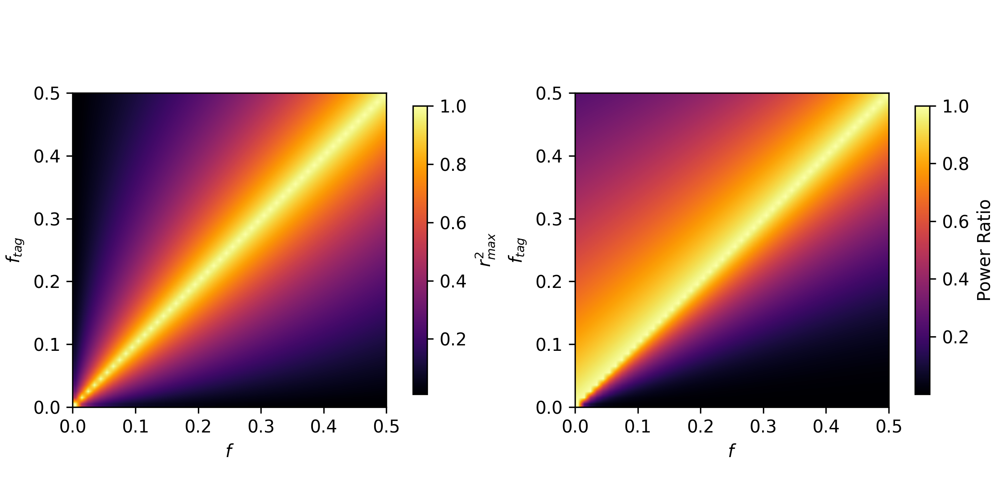
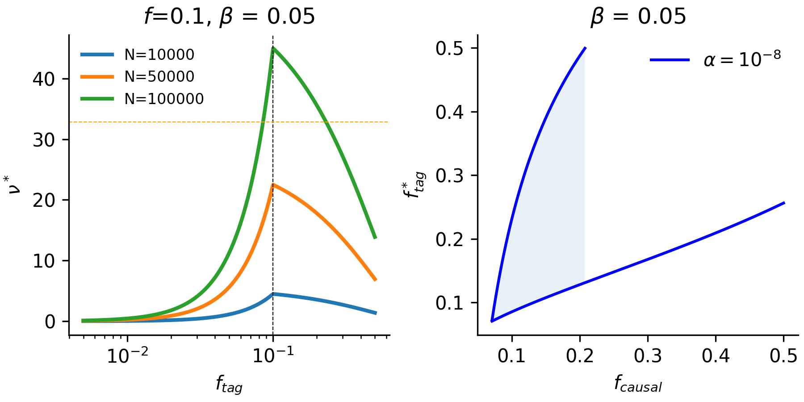

A maximal LD perspective on power in GWAS¶
The relationship of LD to GWAS power and variant tagging¶
A major goal in human genetics is to understand how the genetic variation in our DNA relates to different phenotypes, such as height or diabetes risk. One of the core tools we use to study this genotype-to-phenotype relationship are genome-wide association studies (GWAS), which tests the association of genotype status against a phenotype. For the purposes of this short post, I will only be considering a quantitative phenotype for which a GWAS is conducted using linear regression.
For a causal variant - or the actual variant affecting the trait - the expression for the non-centrality parameter of the chi-squared association statistic (\(\nu\)) is:
However, in many cases we do not actually type the causal variant but are relying on a nearby “tagging” variant nearby that may be a more common variant in the population. Therefore, the power of the “tagging variant” can be expressed as:
The term \(r^2\) is the squared correlation coefficient between the causal variant and the tagging variant. That term is one of many statistics of the linkage disequilibrium between two variants. There is well-reasoned theory for what \(r^2_{max}\) should be from a nice paper by Van Liere and Rosenberg, conditional on the allele frequencies of the two variants. Therefore for a causal variant at a specific frequency \(f_{causal}\) in the population with effect size \(\beta\), and a tagging variant at frequency \(f_{tag}\), the expression for the ratio in power is:
While \(r^2_{max}\) may be symmetric between \(f_{tag} \) and \(f_{causal}\), the ratio of power is certainly not! While power is maximized when \(f_{tag} = f_{causal}\), if they are inequal, there is always more power when the tag allele is more common than the causal variant.
{kind=link}
This is not super surprising as the power of an association test is related quadratically to its frequency in the GWAS sample!
Range of GWAS Discoveries¶
However, we can also ask the inverse question: for a given causal variant and effect-size, what is the possible range of tagging variant frequencies that pass detection?. If we consider the value \(\nu^*\) as the critical value where \(1 - F_{\chi^2}(\nu^*) = \alpha\), we must solve the following equation for \(f_{tag}\):
Rearranging the equation, we arrive at:
The right-side of the equation will always be quadratic in \(f_{tag}\) so we can expect that there will be either no roots or two roots to the function. We can see in the figure below that this is apparent at different sample sizes (for an approximate threshold of \(\alpha = 10^{-8}\)).
{kind=link}
Further implications for study design¶
This illustrates that a wide range of tag frequencies (typically including the underlying causal variant) are possible in a model where there is maximum LD obtained between the two variants. This can kind of be thought of as an upper-bound on the frequency range of tag variants coinciding with a given causal variant. There are some interesting follow-up areas that one could develop:
Consider empirically how much lower on average \(\hat{r}^2 \approx \alpha r^2_{max}\) and how this lowers the range of detectable frequencies for GWAS effects.
Considering sample-composition from different demographic histories and how they impact the GWAS-panel specfic \(\hat{r}^2\) properties. This can also be similarly useful to identify population-by-loci combinations where \(\hat{r}^2\) is maximally different to better limit the range of causal variants discovered.
References¶
Reproducing Plots¶
You can find all of the functions for reproducing the figures here in the linked github gist